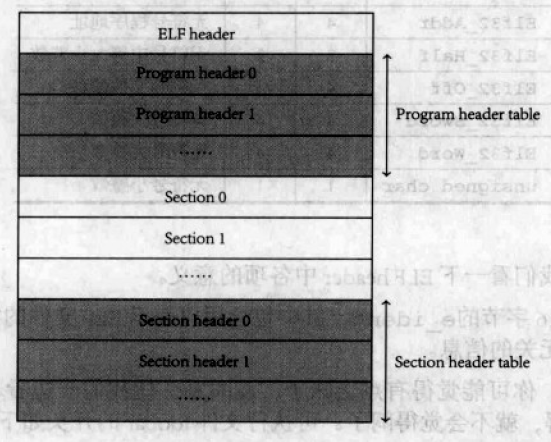
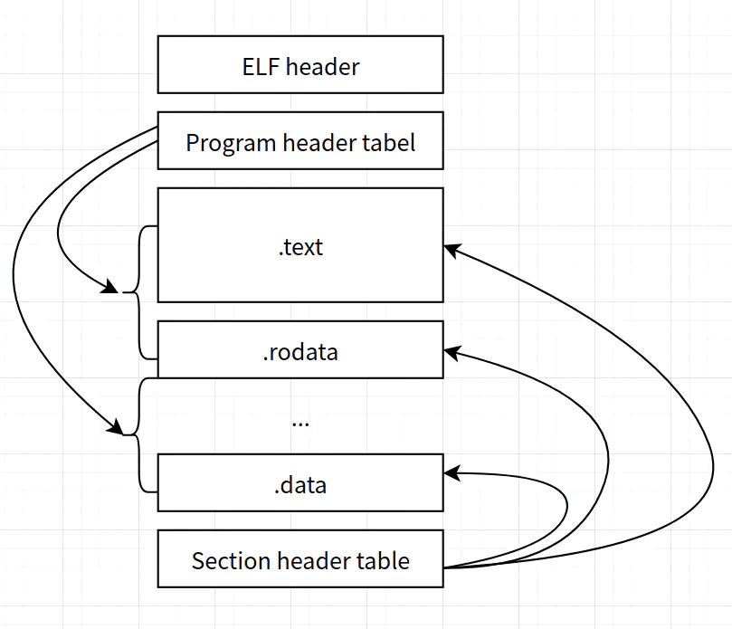
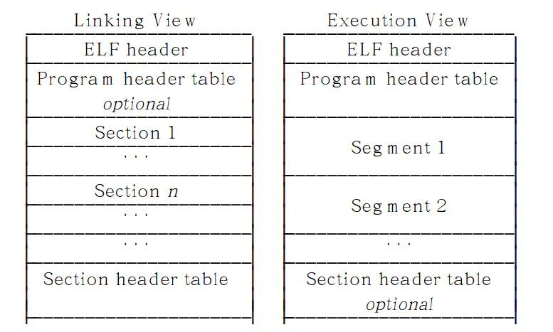
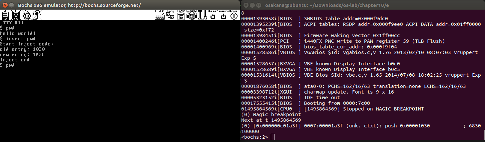
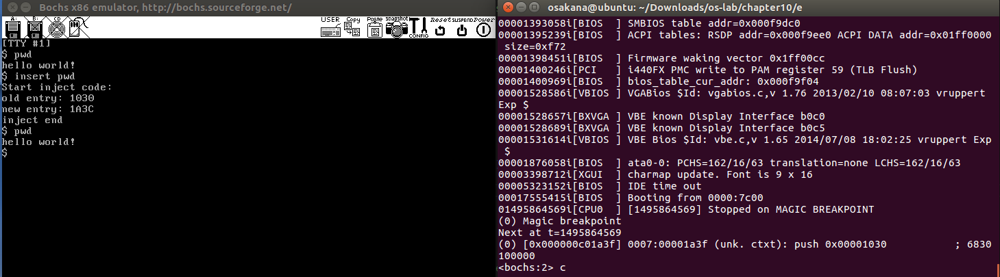

# ELF 文件格式

ELF 文件由 4 部分组成，分别是 ELF 头、程序头表、节和节头表。其中，只有 ELF 头的位置是固定的。
# ELF Header
ELF 头的格式定义如下：
1 |
|
这里，我们仅关注几个我们需要用到的项：
- e_entry 程序的入口地址。
- e_phoff 程序头表在文件中的偏移量（以字节计数）。这里的值是 0x34。
- e_ehsize ELF 头的大小。这里的值为 0x34。
# Program Header Table
程序头表的结构如下：
1 | /* Program segment header. */ |
程序头表描述的是系统准备程序运行所需的一个段或其他信息。我们关注以下几个项：
- p_offset 段的第一个字节在文件中的偏移。
- p_vaddr 段的第一个字节在内存中的虚拟地址。
- p_filesz 段在文件中的长度。
- p_memsz 段在内存中的长度。
# 执行视图


上图左边为链接视图，主要指前面 ELF 头部的节头表定义的节区分布，它指明了目标代码文件的内容布局。
上图右边为执行视图，主要指前面 ELF 头部的程序头表定义的段区分布，它指明了程序运行时的内存布局。
# 篡改流程
# 创建 ELF 头和程序头的结构体
我们创建 ELF 头和程序头的结构体，用来存储相关的原始数据，并根据嵌入需要来更新结构体中的数据。
1 | printf("Start inject code:\n"); |
# 读取 ELF 头的信息并存储
我们将 ELF 头信息赋值给 elf_ehdr 结构体，将入口地址赋值给 old_entry，为后面更改入口地址做准备。
1 | //read elf |
# 读取程序头表信息并存储
我们先将 elf 头信息丢弃到 buffer 中（因为我们上一步已经存储了相关信息），然后读取程序头表信息并将其存进 elf_phdr 结构体中。
1 | //read program head table |
# 更新程序入口地址
我们将预期的入口地址设为程序头表第一项指向的段的后面（当然也可以新增一个节，找到空闲位置并将入口地址指向这个节区，这里做是为了方便）。e_entry = p_vaddr + p_filesz，p_vaddr 也就是第一个程序头表指向的段的第一个字节所在的地址，而 p_filesz 也就是程序头表指向的段的大小，因此两者相加就是指向程序头表指向的段之后的区域。
1 | // update new entry |
# 更新 ELF 头
重新做 close 和 open 操作是为了重置 old_file 的值（也相当于指针），以便从头开始读取文件信息。
我们将前面已经更新信息后的 elf_ehdr 结构体数据写入可执行文件中，完成 ELF 头的更新。这里 old_phsize 计算的值是为了后面嵌入代码做的准备工作，也就是可执行文件开始到嵌入代码位置的偏移。
随后将第一个程序头表指向的段扩容，增加一页 (4k) 大小，以便存放我们嵌入的代码。
1 | //update ELF head |
# 更新程序头表
将 elf_phdr 结构体写入可执行文件，完成程序头部表的更新。随后进入到嵌入代码函数 insert 中。
1 | // update program head table |
# 嵌入函数
insert 函数定义如下：
1 | void insert(Elf32_Ehdr elf_ehdr, int old_file, int old_entry, int old_phsize, char *elf_file) |
我们计算原始入口地址的二进制表示，然后为后面嵌入代码做准备，因为嵌入的代码是机器码表示形式。
1 | int old_entry_addr[4]; |
这里，我们用到了 cal_addr 计算地址的函数，该函数源码如下：
1 | void cal_addr(int entry, int addr[]) { |
嵌入代码用一个 char 类型的数组存放，这里很简单，我们仅仅是嵌入了一个断点调试代码（xchg bx, bx)，然后将原入口地址压栈并返回，继续执行原程序的代码。
1 | char inject_code[] = {0x66, 0x87, 0xdb, //xchg bx, bx |
这里我们先读取可执行文件 old_phsize 大小（之前提到过）的信息放入 buffer 无用缓存区中，然后将嵌入代码注入。这里我们可以将第一个程序头表指向段新增的一页除去嵌入代码的剩余部分全部补 0，当然，我们嵌入的可执行程序很简单，不补 0 也没关系。
1 | close(old_file); |
# 主函数
没什么好说的～
1 | int main(int argc, char **argv){ |
# 完整代码及运行结果
我们在一个 shell 中输入命令，来执行嵌入程序并查看结果：

可以看出，嵌入之后的 pwd 可执行文件，会在断点处停止，也就是我们嵌入的断点。

再次按下 c 执行，才会打印出原本的内容。
完整源码如下：
1 |
|